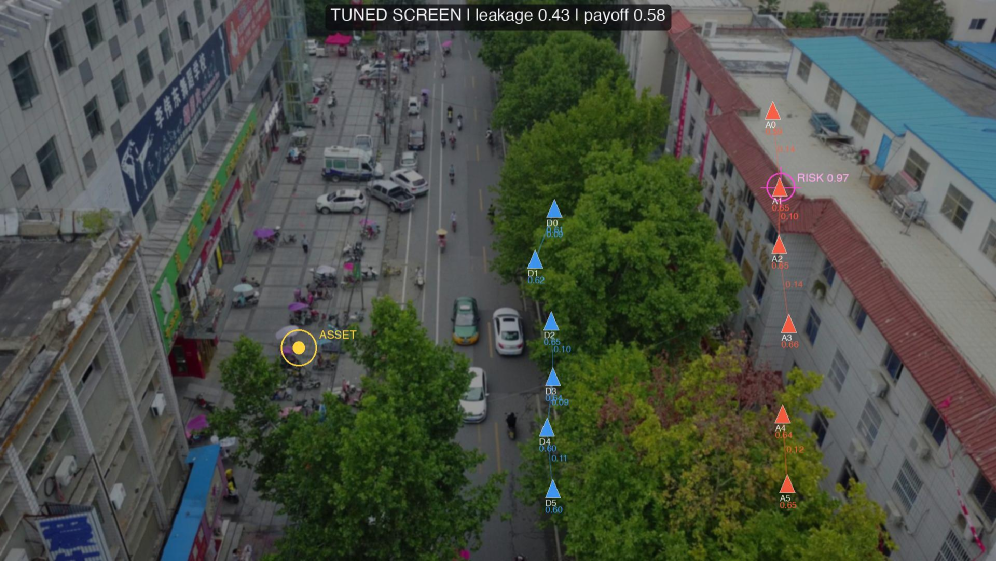
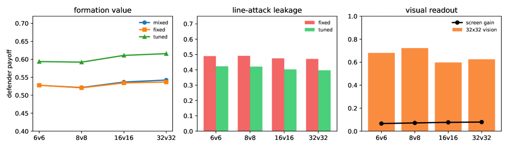
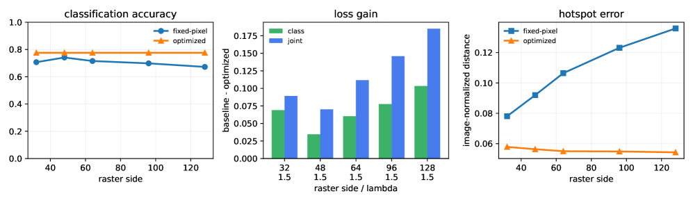
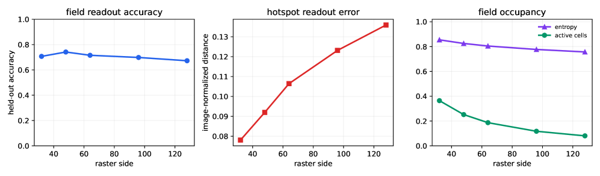

Ancillary Lean (and Coq) files check the finite encoder-selection inequality and fixed-point 128-by-128 numeric gain identities behind one result.
Abstract
We convert drone-vision annotation streams into virtual swarm-game states without controlling physical drones. VisDrone and UAVSwarm metadata are compressed into a Bloom representation; deterministic probes produce bounded capability vectors, image-space formations, finite zero-sum payoffs, and human-readable visual overlays. The audit scales from $6\times 6$ to $32\times 32$ finite games and adds a repeated Markov layer with stock, fatigue, adaptation, exposure, stress, budget, data-growth, model-improvement, and entropy-budget state variables. Local screen tuning raises robust screen security from $0.526$ to $0.593$, and the $32\times 32$ tuned screen reaches value $0.616$. A field readout audit shows that fixed-pixel rasters do not improve monotonically: $128\times 128$ accuracy is $67.2\%$ and hotspot error is $0.136$. The diagnosed error is shrinking image-plane bandwidth. A finite empirical-risk encoder over scale-normalized Gaussian bandwidths selects a scale-normalized encoder with $λ=1.50$, reaching $77.6\%$ accuracy at $128\times 128$ and reducing joint loss by $0.185$. A server-side audit checks $16{,}777{,}216$ target-localization states, and a 32-round repeated-game audit over $16{,}777{,}216$ trajectories selects a budget-adaptive policy with value $0.461$.
Problem
The work asks whether drone-vision annotation datasets can be turned into reproducible virtual swarm-game states for studying interception and repeated-game sustainability, without controlling physical drones.
Approach
VisDrone and UAVSwarm annotations are hashed into a Bloom filter, and seeded probes yield bounded capability vectors for virtual agents placed in formations from 6v6 to 32v32. These feed finite zero-sum games solved by multiplicative weights and a repeated Markov game with stock, fatigue, budget and entropy-budget variables. States are rendered as tactical overlays and rasters for visual readout, and a scale-normalized Gaussian encoder is chosen by empirical risk. Narrow Lean and Coq files check the encoder-selection inequality and the numeric gain identities.

Figure 3: Human-readable tactical overlay for the seed-17 scenario on a real VisDrone frame. The triangles are virtual agents generated from dataset-conditioned capability vectors; nearest-neighbor links, confidence scores, asset marker, and hotspot marker are rendered from the same seed. For this exact state the tuned screen reports leakage 0.431, payoff 0.585, hotspot score 0.970, and intercepti

Figure 1: Multi-scale formation audit from 6v6 to 32v32. The left panel compares mixed, fixed-screen, and tuned-screen values; the center panel shows fixed versus tuned leakage under a line attack; the right panel reports the 32-by-32 visual-regime readout and tuned-screen gain. At 32v32, the tuned screen value is 0.616 and the visual readout accuracy is 62.5%.
Results
Local screen tuning raises robust security from 0.526 to 0.593, and the 32x32 tuned screen reaches value 0.616. The selected encoder (λ=1.50) raises 128x128 accuracy from 67.2% to 77.6% and reduces joint loss by 0.185. A 32-round repeated-game audit selects a budget-adaptive policy with value 0.461.

Figure 7: Risk-minimized visual encoder for 32-by-32 through 128-by-128 rasters. The optimization compares the fixed-pixel baseline with scale-normalized Gaussian bandwidths and selects the encoder minimizing (1-\widehat{a}_{m})+\widehat{e}_{m} . The 128-by-128 result is the numerical instance of the finite encoder selection bound: the selected encoder cannot increase empirical joint loss over the

Figure 6: Field-resolution audit from 32-by-32 to 128-by-128 rasters. The panels compare visual-regime accuracy, raster-hotspot error, and occupancy entropy/active-cell behavior. The result links the visual benchmark to the sparsity and hotspot-stability lemmas: larger rendered fields add numerical detail, but fixed-pixel kernels can shrink the image-plane support and reduce the classifier signal.